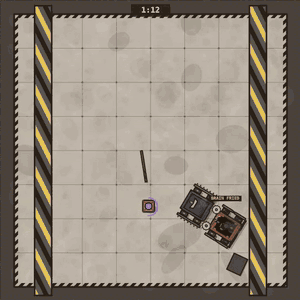
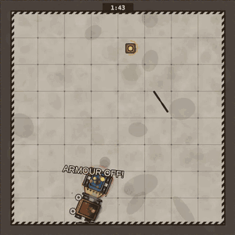
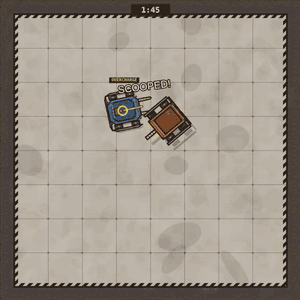

ROBOCUS 2.0THE RULEBOOK · SPARTACUS WITH ROBOTS
Four robotics teams scheme, bid, bet and fight until one reaches 12 fame. The skeleton is Spartacus: A Game of Blood & Treachery; the gladiators are physics-simulated robots that lose real parts. You don't need to remember Spartacus to read this: every rule is written out, with a purple note where it maps to the board game.
▶ Play ROBOCUS 2.0 See three fights
Playing together: one person opens the game, clicks the 🌐 badge in the top bar, chooses Host a game and sends the invite link. Everyone else opens the link on their own laptop, types a name, picks a colour and presses Ready. Empty seats are played by the AI. The game wants a laptop screen; this page reads fine on a phone.
01The game in a minute
A game is about 11 rounds. Each round you repair, play cards, buy at auction, and then one fight happens. The winner of the host auction decides who fights whom. Everyone bets. The robots fight on their own while you throw the odd card into the arena. Then the host decides which losers get scrapped.
| You have | What it is | Spartacus |
|---|---|---|
| Fame | Your score. Start at 0, first to 12 wins. It is also your licence to play cards: every Intrigue card needs a minimum fame. | Influence |
| Credits | Money for bids, bets, repairs and bribes. You start with 8. | Gold |
| Robots | Up to 3 in your garage, levels 0 to 4. Damage stays on them between fights. | Gladiators |
| Mechanics | Your crew. Each earns 1 credit a round and can do one repair a round. You start with 2. | Slaves |
| Security Bots | Your defence against schemes. Each rolls a die: 4, 5 or 6 blocks. You start with 1. | Guards |
| Intrigue hand | Schemes, reactions and face-down cards. Secret until played. | Intrigue deck |
| Parts | Drones, modules, upgrades and tuning chips you fit on robots. Spare ones sit in your Stash (max 4, visible to all). | Equipment |
Everything on a robot is open information. The only secrets are your hand, your sealed bids, and face-down cards on a robot.
02Help on screen
Rest your mouse on anything for a third of a second and a small box explains it: a card, a part, a 🎩 odds badge, a bookie tag, a damage chip, a crew line, any entry in the log. It tells you what the thing is, what it does and what it costs. If you are lost, hover before you ask.
- The sticky note under the arena says YOUR MOVE and has the button for it, or AT THE TABLE when you are waiting for someone.
- The top bar shows the seven steps and a dot per team: green is done, pulsing means we are waiting for them. A red 🏁 pill appears when a team is 2 or 1 fame from winning.
- The log on the left records everything, with ✓ landed or ✋ blocked on every scheme and a 🪙 line for every credit that moves.
- A strip under the Market shows next round's lots, so you can save up for the part you want.
03A round, step by step
Spartacus has four phases: Upkeep, Intrigue, Market, Arena. ROBOCUS has the same four, with the Arena split into Host, Bets, Fight and Fate.
- Upkeep · everyone at the same time
- Robots, Mechanics and Security Bots that were exhausted become ready again.
- Income: +1 credit per Mechanic. Cost: 1 credit for your first robot (extra robots are free).
- Draw 3 Intrigue cards.
- Repairs. A robot's damage is shown in three zones: ⚙ Drive, ⚔ Weapon, ⛨ Body. Body parts that are still attached heal to half for free. Beyond that, a damaged zone costs 1 repair action and a broken zone costs 2. Each Mechanic gives 1 action and is then exhausted for the round. Out of Mechanics: 2 credits per action. A team that lost last round's fight gets 1 free action.
- Fit parts from your Stash onto robots.
- Intrigue · one turn each, last round's host first, then clockwise
- Play as many schemes as you like: drag a card onto a garage (a rival's to hurt, your own to help).
- Each card shows a fame gate. Your fame must be at least that number. If it isn't, ask other teams to back you: their fame is added to yours for that one card. You negotiate the price; they are paid only if the card is really played.
- Install Security Bots from your hand into your garage.
- Cash in cards you don't want: discard them for the credits on their coin.
- Hand limit at the end of your turn: 4 cards (5 from fame 5, 6 from fame 9). Extra cards are cashed in.
- Market · three parts
- Open market. Trade credits, parts, robots, Mechanics and Security Bots with anyone. Nothing moves until both sides accept. You can sell Stash parts to the bank at half value.
- Auction. Four lots are on the table: usually a robot, two parts and a mystery crate. Everyone writes a sealed bid on each lot at once, with at most the credits they have. Lots resolve in order; the highest bid pays and takes it, everyone else keeps their credits. Ties rebid in secret. A level 4 robot needs a bid of at least 5. An unsold part comes back next round 1 credit cheaper.
- Host bid. One more sealed bid with what you have left. The winner pays, becomes this round's host and gains +1 fame, unless it is the sole fame leader. With the bid you also name 1 or 2 robots per side for the fight.
- Host
- Arena cards may be played (Mirror, House Robot, Grand Melee; section 08).
- The host picks the arena layout (open floor is free, the others cost 1 credit) and invites two teams. It may invite itself. Anyone may offer the host credits to be invited or left out; the host is paid only if it does it.
- An invited team picks which ready robot to send. It may decline for −1 fame; then another team steps in.
- Each invited team gets appearance money: 2 credits, plus 2 per Fan token on the robot it sends.
- Bets
- The bookie shows each side in a band (Heavy favourite, Favourite, Even, Underdog, Heavy underdog) plus up to two tags per robot. It knows every robot, part and bit of damage it can see. It does not see face-down cards.
- Bet 1 to 3 credits on a side (not against your own robot). Bets are public and you can change yours until everyone locks. Payout: Heavy favourite 1.33×, Favourite 1.5×, Even 2×, Underdog 3×, Heavy underdog 4×.
- Two fight cards are auctioned at the same time by sealed bid. One card per team per fight, for this fight only.
- Fight
- Face-down cards are revealed. The robots fight by themselves in a full-screen arena with a damage panel per robot.
- If you won a fight card: tap it, then tap a robot or a spot in the arena.
- During the fight the arena interferes: walls close in, floor bumpers fire, a ceiling hammer drops. A fight ends by knockout, or at 2 minutes the judges decide.
- Fate
- Winners: +1 fame per team on the winning side, and a Fan token on each winning robot.
- The host judges every losing robot, one at a time: spare or scrap. The owner may pay the host to spare it; rivals may pay to scrap it. A scrapped robot is gone with its parts. The host's own robots and Fan Favourites can't be scrapped.
- The game checks for a winner here, and also after Intrigue, after the auction and after the host bid.
04Fame: every source
- +1Win a fight. Every team on the winning side, once. In a Grand Final (card, gate 10: the two fame leaders against the other two) it is +2. A draw or a House Robot win pays nobody.
- +1Host. Win the host bid. Not if you are the sole fame leader, and not if you called 2 robots per side and the fight ends up 2 against 1.
- +1Fan Favourite. A robot's 3rd win makes it a Fan Favourite. The fame is yours while the robot is yours: trade it away or trade it in and the fame goes with it.
- +1Bounty. We Have Your Number puts a 🎯 bounty on a rival robot with 3+ Fan tokens. Every team that beats it in a fight gets +1 extra.
- +1Grand Melee. If this reaction turns the fight into a free-for-all, the host gains 1.
- +1/+2Publicity cards. Fan Meet (needs 2 ready robots), Roadshow (+2, needs 3 ready robots), Public Demo (pay 3 credits), Launch Party (pay every rival 2), Team-Building Day (exhaust 2 crew), Press Tour (exhaust 3 robots, crew or bots), Museum Donation (give up a robot or crew member), Celebrity Endorsement, Prime-Time Interview, Viral Moment, Co-Branding Deal (+1 to two teams), Underdog Story (+2 to the team in last place), Hype Reel (a free Fan token).
- −1…−3Losing fame: Smear cards (Bribe Scandal, Inside Leak, Paparazzi, Rival Sponsor, Kick When Down −1; Smear Campaign −2; Public Disgrace −3), declining an invitation, refusing a Tag Team ally, refusing a Hostile Buyout, and losing a Fan Favourite. Losing a fight costs no fame.
In 200 AI games fame came in three almost equal parts: cards 37%, fight wins 33%, hosting 30%. You need two of the three to win.
05Cards, backing and blocks
| Type | When | Notes |
|---|---|---|
| Scheme (blue) | On your Intrigue turn | Drag it onto a garage. Needs your fame at or above the gate. |
| Reaction (orange) | Any time its trigger happens | Blocks, Kick When Down, Botched Install, Override. A prompt appears when you can use one. |
| Face-down (purple) | On your Intrigue turn | Goes on a robot unseen and stays until that robot's next fight. Secret Upgrade and Overclock on your own; Sugar in the Tank and Smudged Lens on a rival's. |
| Security Bot (steel) | When you are targeted | In hand or installed. Spent, rolls a die, 4+ blocks. |
| Arena (olive) | Host or Bets step | Change the fight's format. |
| Fight card (hazard stripes) | During the fight | Never in your hand: bought in the Bets step for one fight. |
How a scheme resolves
- You play it. If you are short on fame you first collect backing. A gate marked ▲ means "only against a team with more fame than you", ▼ "less".
- If it harms someone, their Security Bots roll, one at a time, until one blocks (4+) or they run out. Every bot that rolls is spent.
- If it got through, anyone with a blocking reaction may play it: Paid Off (pay 3 to another team), Fall Guy (lose a crew member), PR Spin, Firewall, Sponsor's Lawyers, Not My Robot (redirect), Under the Radar (blocks a team with more fame), Overreach (blocks a team with less).
- If it was blocked, any team except the target may play Override: the block is cancelled and the scheme goes through. Only Firewall stops an Override.
Spartacus: Guards roll to foil, then Reactions. Jupiter's Cock is split in two here: Firewall blocks anything, Override cancels a block.
The team-up cards
Public Disgrace (target −3 fame, gate 15) and Corporate Raid (target loses up to 8 credits, shared between you and your backers, gate 14) have gates above the winning score. Nobody can play them alone. They exist so that the table can stop a runaway leader together, and the target can't back a card against itself.
All Intrigue families at a glance
Contracts turn crew and luck into credits: Overtime Shift, Smash and Grab (steal 3), Crunch Week, Scrapyard Salvage, Consulting Gig, Scrap Deal, Industry Insider (draw 2), Joint Venture (a prisoner's dilemma for 7 credits each).
Publicity gains fame (section 04). Smear takes it away.
Sabotage hits a garage: Poached Mechanic, Security Override (exhausts all their bots, can't be blocked by bots), EMP the Garage (modules and drones offline next fight), Sugar in the Tank, Smudged Lens, Loose Bolts (a wheel left loose), Rogue Firmware (a robot sits out), Tax Audit (−5 credits), Coolant Leak (exhaust 1–2 robots), Botched Install (wreck a part a rival just won), We Have Your Number (bounty).
Corporate (leader against those behind): Asset Strip, Hostile Buyout, Shill Bidder, Corporate Raid.
Match-fixing: Secret Upgrade, Overclock, and the Arena cards Mirror, Unleash the House Robot, Grand Final, Tag Team Licence.
Security: the Security Bot and the blocking reactions. Leverage: Override.
Fight cards (auction only): Remote Trigger, Pilot Waypoint, Target Overclock, Field Engineer, Oil Canister, EMP Grenade, Call the Hammer, Floor Launcher, Supply Drop, Chip Hack, Rattle Loose, Hype Surge, Electromagnet, Smoke Bomb, Floor Spikes, and Swap the Entry.
06Robots, parts and damage
A robot has no stat block. It is a machine: chassis, armour plates, a lid, wheels or tracks, drive motors, a battery, a radio, a processor chip and a weapon. Hits take off real parts, and what is gone stays gone until you repair that zone.
| Level | What | Where from |
|---|---|---|
| Level 0 · starters | 9 classic one-weapon robots, roughly even. You are dealt 2 and keep 1; all picks are revealed together. | Setup |
| Levels 1–3 · Market | 17 robots with a twist: jump jets, a shield, twin saws, a harpoon. One level up wins about 2 fights in 3. | Robot lots: level 1 in round 1, then gradually up to level 3 from round 6 |
| Level 4 ★★★★ · end game | 7 exotic machines: a three-segment strike arm, a trebuchet, a six-legged stalker, orbiting saw discs, an electromagnet. | From round 6, one every second round, named a round ahead, minimum bid 5 |
Parts
Every robot has 2 part slots and 1 legendary slot. A part is worth about one level; a legendary about two. In AI games robots with 0 / 1 / 2 / 3 parts won 41 / 47 / 58 / 75% of their fights.
| Kind | Examples | Good to know |
|---|---|---|
| Drones | Gun, Booster, Medic, Jammer | Fly along and act on their own. EMP the Garage switches them off. |
| Modules | Energy shield, EMP burst, Mine layer, Pop-up flipper, Tow cable, Sensor scrambler | One per robot. A new module replaces the robot's own (Hornet's jets, Brawler's EMP). |
| Upgrades | Weapon overhaul, Reinforced hull, Power kit, Overdrive | Plain strength. Overdrive hits 55% harder but wears out its own weapon. |
| Tuning chips | Matador, Wall Bait, Pester | Teach a light robot a move (sidestep and counter). On level 2+ frames they glitch. |
| Legendary | Prototype core, Field hospital, Quantum shield | One copy each, announced a round ahead. |
What damage really costs
| The robot walks in with… | Wins |
|---|---|
| nothing wrong | 59% |
| Body broken (armour, lid) | 44% |
| 🧠 processor chip fried | 9% |
| Drive broken | 9% |
| Weapon broken | 10% |
So: always fix the Drive and the Weapon. A broken Body is survivable for most robots, unless the red 🧠 CHIP FRIED strip is showing: then the robot fights on backup control and loses nearly everything until its Body is repaired.
A full garage (3 robots) can still bid on a robot: if you win, you trade one in for 1 credit plus its level, and its parts go to your Stash.
07Three fights
Three short clips from the real fight engine, each to make one point. The rest you should find out at the table.



08Fight formats and arenas
The normal fight is a duel. Everything else is something a host or a card makes happen, and each format changes who should be afraid.
| Format | How it happens | What to expect |
|---|---|---|
| Duel · 1 v 1 | The default. 58% of fights in AI games. | The most predictable format: the favourite wins 79%. Matchups matter more than level, so read the 🎯 and ⚠️ tags. |
| Double duel · 2 v 2, two teams | The host named "2 per side" with its bid (costs it 1 credit). Each invited team sends up to 2 robots. | The favourite wins 81%: depth beats one star robot. A team with one good robot and one wreck is in trouble. 25% of AI fights. |
| Outnumbered · 2 v 1 | A double duel where one team has only one ready robot. The host loses its +1 host fame. | Brutal. A lone robot beats two robots of its own level 4% of the time; one level up 14%, two up 21%, three up 41%. If you are the one, a fight card and a prayer. If you are the host, it costs you a fame to arrange. |
| Tag team · 2 v 2, four teams | Tag Team Licence (you pick your ally; refusing costs them 1 fame) or Grand Final (the two leaders against the other two, double fame). | A team is about as strong as its two robots added up. The least predictable team format: the favourite wins 73% and fights run longer. Avoid a 🤝 Lone wolf partner: Trebuchet throws its own ally. |
| Free-for-all | Only through the Grand Melee card. Rare on purpose. | Chaos: the duel favourite wins under half the time, because the strongest robot gets ganged up on. Robots that hit whatever is near thrive (Mauler, Orbiter, Ramrod, Thwacker); robots that commit to one target get hit from the side (Trebuchet, Corkscrew, Forklift). |
| Mirror | Host-only card. | Each side fights as two copies of one robot. Short and violent. Good for robots that are strong but fragile. |
| House Robot | Host-only card. | Big Mallet joins: huge, slow, lands about 1 swing in 10 and it hurts. Robots keep away from it, which shrinks the arena and flattens the odds a little. If it outlasts everyone, nobody gets fame and bets are refunded. |
Arenas
The host picks. Invited teams see the arena before choosing a robot, and the bookie counts it.
| Arena | What | Who likes it |
|---|---|---|
| 🟫 Open Floor | The plain 8 × 8 m arena. Free. | Everything on this page was measured here. |
| 🪚 Floor Saws | Four saws pop out of the floor. | Shovers and ranged robots: Whaler goes from 19% to 69% within its level, Rocketeer 35 to 80. Pincher and Forklift hate it. |
| ☠️ Killbox | Spiked walls and two saws. | Pushers. Gyro doubles its wins here. |
| 🔒 The Cage | 6 × 6 m: nowhere to run. Duels only. | Snapjaw and Popcorn do better here; Juggernaut does worse. |
| 🧊 Ice Rink | Wheels and tracks slide; legs keep their grip. | Brawler doubles its wins; Tarantula walks as if nothing changed. Most epic combos built on speed stop working. |
09The bookie's tags
The bookie shows bands, never percentages. To let you see what it sees, it pins up to two small tags on a robot when something stands out. Each tag is there because test fights showed a real, repeatable effect; hover one for the numbers. Reading them is how you find builds and counters without memorising a table.
| Tag | When you see it | Why it exists |
|---|---|---|
| ⚡ Epic: name | A robot carries its epic part. Also as a gold ribbon on a Market lot that would make one, for any team. | So the whole table sees the prize, and can bid to take it or to deny it. |
| 👑 Giant-slayer build | All three parts of one of the four builds are on the robot. The Market says when a lot completes one. | A small robot that now beats the end game. Everyone should know. |
| 🧩 Great fit 🧩 Poor fit | A part that does clearly more, or less, on this robot than on most. | 32 great and 24 poor fits survived testing. The Market shows it before you bid. |
| 🎯 Counter pick ⚠️ Bad matchup | In a duel, when this pairing is 25+ points off what the levels say. | Weapon and shape beat level more often than you'd think. This is the host's main tool. |
| 🪚 Saw specialist Hates saws | This fight's arena suits or hurts the robot. Same for ☠️ Killbox, 🔒 Cage, 🧊 Ice. | The arena is the host's second tool, and costs only 1 credit. |
| 💾 Chip-tuned | A tuning chip on a level 0–1 robot. | Chips make light robots punch two levels up, and the bookie is less sure about them. |
| 🗡️ Giant killer | Thwacker, Vertigo, Ramrod, Blowtorch. | They beat higher levels far more often than their level should. |
| 🔨 Hard hitter | Wrecker, Buzzkill, Whirlwind, Sawblast, Angler. | Even when they lose, the winner leaves badly damaged. Matters for the next round and for Fate. |
| 🎲 Coin-flip brawler | Snapjaw. | 61% of its fights are blowouts, either way. A betting warning. |
| ⏱️ Quick finisher 🧱 Grinder | Rocketeer (35 s fights); Pincher, Wrecker, Gyro (70 s+). | Fight length decides how much a fight card can do, and how much damage both sides carry out. |
| 🌀 Brawl master 🌀 Lost in a melee | Only in a free-for-all. | Some robots are 15–20 points better or worse in a crowd than in a duel. |
| 🤝 Lone wolf | Only in a 2 v 2: Trebuchet, Snapjaw. | They cost their own partner about 10 points. |
| 🧠 Chip fried | The robot's processor died in an earlier fight. Always shown. | It wins 1 fight in 10 until its Body is repaired. This used to be invisible, and was the main reason the odds were wrong. |
| 🩹 Needs its armour 🩹 Shrugs it off | The Body is broken, on a robot where that matters much more or less than usual. | Thumper and Forklift fall apart without plates; Whirlwind and Lodestone hardly notice. |
| 🎯 Bounty +1 fame | A red strip on a robot marked by We Have Your Number. | Beat it and you get an extra fame. A reason for the table to gang up on a star. |
| ??? | Next to the band. | The bookie admits doubt: a chip on a light robot, a coin-flip brawler, or a face-down card in the fight. |
Ideas for later, not built: a 🏠 Repeat host mark on a team that hosted 2 of the last 3 rounds (the AI already treats that as a threat), and a 🧲 Magnet-proof note on rubber and fibreglass robots when Lodestone is in the fight.
10The balance chart
Every robot against every other robot, 20 fights a pair, open floor: 528 pairings, 10,560 fights. Read across a row: blue means the row robot wins, orange means it loses. Robots are sorted by level, weakest first, so a perfectly "fair by level" game would be a clean orange triangle top right and blue bottom left. The speckles are the game: every blue cell above the diagonal is a cheaper robot beating a more expensive one.
| Lower level wins… | vs L1 | vs L2 | vs L3 | vs L4 |
|---|---|---|---|---|
| Level 0 | 34% | 27% | 12% | 9% |
| Level 1 | 42% | 28% | 21% | |
| Level 2 | 33% | 30% | ||
| Level 3 | 27% |
How it was balanced
- Levels come from results, not from design. Each robot has a power grade (its damage and part health scaled a few percent). After the first full table, grades were adjusted in three passes and three robots simply changed level: Whirlwind went up to 2, Juggernaut down to 1, Grandmaster down to 3.
- Counters were left in on purpose. About 150 pairings are 25+ points off what the levels predict, and 141 of them repeat on fresh fights. That is the rock-paper-scissors: it gives a cheap robot a job and gives the host real choices.
- The bookie reads this table. A duel's odds start here, then move for the arena, parts and damage. On fights it had never seen, pairs it rated 0–20 / 20–40 / 40–60 / 60–80 / 80–100% won 9 / 29 / 46 / 67 / 83%.
- Fights themselves are one-sided. The winner keeps 79% of its health on the median and 94% of fights end in a knockout. Only about 1 pairing in 5 is close to even; 4 in 10 are 90/10 or worse. The balance lives in the choice of matchup, in parts and in damage carried over, not in every duel being a coin flip.
- Parts were tuned to "one level each". Too-strong parts were cut back (Booster drone, Overdrive), weak ones raised (Pop-up flipper, Wall Bait chip), and three healing parts removed so fights end.
11What 400 AI games taught us
Before any person played 2.0, four AI teams played it about 400 times from start to finish, plus tens of thousands of single fights. Some of what came out:
- The host bully. Kev won his own test game 13–7–3–0 by cashing in nearly every card and buying the host seat 9 rounds out of 10, always sending his best robot against the weakest. An AI told to do only that won 63% of games against normal AIs. Three table habits bring it back to 28%: bid higher against a repeat host, stop paying it to spare your robots, and aim your cards at it. No rule was changed; the defence is social.
- Revenge is expensive. AIs were given personalities. The schemer (plays more cards) won 32%, the backstabber 28%, the normal one 22%, the loyal one 16% and the vengeful one, which goes hard after anyone who hurt it, 10%.
- Early fame is cheap, late fame is everything. Measured by who wins in the end, 1 fame is worth under 1 credit while the leader is on 0–3, about 2 credits at 7–9, and 4 to 10 credits at 10–11. A robot is worth 5–6 credits all game.
- Nearly every card is worth more played than cashed. A +1 fame Publicity card is worth about 5 credits played against 2 cashed; Underdog Story about 12. Cashing everything still works early, when fame is cheap, which is exactly why the bully strategy works.
- Epic parts get stolen. When a part that would make an epic combo comes up, the robot's owner gets it 36% of the time and a rival takes it 48%. Denial is the main fight over combos.
- Nobody built a Giant-slayer. Zero in 400 games; twelve robots got two of the three parts.
- The invisible killer. A handful of robots kept losing fights the odds said they should win. The cause was not the robots: 6% of all fighters were walking in with a dead processor chip that nothing on screen showed. Hence the 🧠 tag.
- Sponsors were uneven. Sovereign Foundry won 45% of its games and Aegis Heavy 14%. Sovereign lost a Mechanic and Aegis gained a free repair; they now sit at 35% and 24%.
- Seat order mattered until it didn't. The lowest seat used to win every tie and so counted as "the leader" on equal fame, and got smeared more. Ties now follow an order shuffled each round.
- Free-for-alls are 1 fight in 100. Kev decided to keep them that rare, as an event.
- Last place gets an award. The end credits hand out prizes with some banter: Robot of the Game, Biggest Upset, Kingmaker, Backstabber, Donated to the Bookie, and for last place, Played Like GPT-2.
All of this is AI against AI. People bribe, bluff and hold grudges differently, which is the point of the first playtest.
12Tactics and card combos
Six things that decide games
The host seat is the strongest position at the table. +1 fame, the pick of the matchup, the pick of the arena, and the scrap decision. If one player keeps buying it, that is everyone's problem: outbid them, refuse their deals, hit them with cards.
Pick the matchup, not the robot. A level 0 Thumper beats a level 1 Mincer 19 times in 20. When you host, look for a 🎯 Counter pick tag before you invite. When you are invited, send the robot without the ⚠️.
The bookie can be fooled, but only by face-down cards. A Secret Upgrade on your underdog and a bet on yourself pays 3× or 4×. Sugar in the Tank on their favourite and a bet against it does the same. If a favourite has a 🂠 on it and the band shows ???, think.
Mechanics are a budget. You have two. Each can repair or stay ready for a card, not both, and a team with no ready crew is open to Kick When Down. Fix Drive and Weapon first; live with a dented Body unless the chip is fried.
Watch the strip under the Market. Next round's lots are shown. If your epic part is coming, keep credits back. If a rival's is coming, a denial bid of 3 credits is cheaper than fighting that robot for the rest of the game.
Play your cards late, cash them early. In the first rounds a fame is cheap and credits buy robots. From fame 7 on, every Publicity card in hand is worth holding.
Card combos
| Combo | How | Why it works |
|---|---|---|
| Open the door | Security Override, then your big scheme | Override exhausts all their Security Bots and bots can't block it. The next card only has to get past reactions. |
| Empty workshop | Poached Mechanic or wait until they repair, then Kick When Down | Teams have two Mechanics. No ready crew is one of Kick When Down's three triggers: −1 fame. |
| Broke and shamed | Tax Audit or Smash and Grab right after they won the host bid, then Kick When Down | 0 credits is another trigger. A host who overpaid is one card from it. |
| No-show | Coolant Leak or Rogue Firmware, then (as host) invite them | With no ready robot they decline automatically: −1 fame. Kick When Down works here too. |
| Bounty hunt | We Have Your Number on their Fan Favourite, then host it against your counter pick | A win is +2 fame for you: the fight and the bounty. |
| Rigged long shot | Secret Upgrade face-down, bet 3 on yourself | About +15% damage and health the bookie can't see, at underdog payout. |
| Lights out | EMP the Garage on a robot that lives off drones or a module | Field hospital, Gun drone, shields: all offline for its next fight. |
| Not on my watch | Botched Install when a rival wins its epic part | The part is wrecked before it is fitted. They get half their bid back and no combo. |
| The coalition | Public Disgrace with two backers, and an ally holding Override | −3 fame on the leader, and their one block gets cancelled. |
| Draft your ally | Tag Team Licence naming the strongest robot at the table | They fight for you or lose a fame. Either is fine. |
| Crowd pleaser | Grand Melee when you own a 🌀 Brawl master | Mauler or Thwacker in a four-way does 14–17 points better than in duels, and favourites fall. |
| Can opener | Rattle Loose, then Chip Hack (two teams, one card each) | A hack is much worse with the lid off. Each team may win only one fight card, so this takes an ally. |
13The first playtest
The numbers above say the game is fair between AIs. The first game with people is about whether it is fun. What Kev will be watching, and what the game logs will be read for afterwards:
- Does the table stop a host snowball? The AI needed three habits to do it. If people don't, a rule is ready but switched off (last round's host can't bid, or a repeat host's bid counts for less).
- Bribes. The AI pays the host about 2 credits a round. People should pay more, and more creatively. If nobody bribes, the Host and Fate steps are too quiet.
- Do combos get found? AIs complete an epic combo in about two games out of three. With the tags, the ribbon and the preview strip, people should do better. If nobody notices them, the tags aren't doing their job.
- Game length in real time. 11 rounds is fine if a round takes 10 minutes and too long if it takes 20. If it drags, the first knob is a higher start fame.
- Cards: cashed or played? If everyone cashes everything, cash-in values are too high or the cards too fiddly to read.
- Unsold parts and late money. A quarter of lots go unsold between AIs and the winner ends with about 15 unspent credits. Do people find better uses?
- Level 4 timing. One every second round from round 6. Too late, too few, or just right as a finale?
- Repairs. Gritty is intended: a third of fighters walk in with a broken Body. Fun tension, or homework?
- The rare formats. A free-for-all should feel like an event. Does anyone ever play Grand Melee?
- Online on separate networks. Fights are kept in step on every screen and tested in one browser; this is the first run across real connections. If a fight looks different on two screens, say so at once.
- Known loose ends. Corkscrew wins less than its odds say; a few robots do better with a partner than the odds say.
If something feels wrong mid-game, use the 📝 button in the log header and add a 🐞 note. It lands in the game log with the exact moment attached.
14Setup and sponsors
Each team: 0 fame, 8 credits, 2 Mechanics, 1 Security Bot, one drafted starter robot, and one sponsor (dealt 2, keep 1).
| Sponsor | Power |
|---|---|
| Aegis Heavy | 2 free repair actions every Upkeep. |
| Blackwire Syndicate | Draw 1 extra card in Upkeep; your schemes need 2 less fame. |
| Sovereign Foundry | Start with 3 Mechanics; win every Market lot tie (not the host bid). |
| Apex Media | +2 credits when you host; Fan Favourite at 2 wins instead of 3. |
| Lucky Seven | Bet up to 5; winning bets pay one band better; a losing bet refunds 1. |
| Vulture Salvage | +2 credits whenever any robot is scrapped; 2 free repair actions after a loss. |
Online. The host's browser runs the game; everyone sees the same table from their own seat. Upkeep, trades, bids and bets wait until everyone is done; Intrigue goes one player at a time. There are no timers: the host has 🔔 Nudge and ⏭ Skip. If someone drops, the game pauses until they rejoin with the same link and name, or the host lets the AI take the seat. Only the host has the fight speed, pause and skip buttons. The game saves every round.
ROBOCUS 2.0 is a work in progress by Kev. Numbers are from AI games and lab fights up to 11 Nov 2026 and will move after the first playtest; where this page and the game disagree, the game wins. The idea and structure come from Spartacus: A Game of Blood & Treachery.